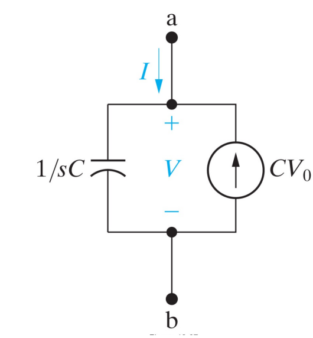

R-C, R-L circuits#
RC Charging Circuit#
When a voltage source is applied to an RC circuit, the capacitor, C charges up through the resistance, R
Capacitors in RC circuits charge and discharge with time-dependent characteristics, leading to exponential changes. The time delay in such circuits, known as the time constant (τ), reflects the response time when a voltage is applied. This delay depends on reactive components like capacitors and resistor.
RC Charging Circuit: In an RC charging circuit, a capacitor \( C \) and resistor \( R \) are connected in series with a DC supply \( V_s \). When the switch is closed, the capacitor charges through the resistor until its voltage equals the supply voltage.
Initially, with the capacitor fully discharged and the switch open, \(i = 0\) and \(q = 0\). When the switch closes, the capacitor, initially acting as a short circuit, allows maximum current \(i = V_s / R\) to flow, which then begins to charge the capacitor according to Kirchhoff’s Voltage Law.
RC Charging Circuit Curves#
The capacitor’s charging curve starts steeply due to a rapid initial charging rate and then tapers off exponentially. The time for the capacitor to reach 63% of its maximum voltage (0.63Vs) is known as the Time Constant (T).
The voltage at 0.63Vs is known as one time constant (1T). As the capacitor charges, the voltage difference between the supply (Vs) and capacitor voltage (Vc) decreases, reducing the current (i). After five time constants (5T), the capacitor is fully charged with \( V_c = V_s \) and current \( i = 0 \). The RC time constant (τ = R * C) indicates the charging rate, with R in ohms and C in farads.
First-Order Differential Equations in RC Circuits#
In an RC (Resistor-Capacitor) circuit, the analysis often involves first-order differential equations. Let’s start by discussing the basic RC circuit and how it leads to an ordinary differential equation (ODE).
RC Circuit Basics#
Series RC Circuit:
Components: A resistor \( R \) and a capacitor \( C \) connected in series.
Input Voltage: \( V_{\text{in}}(t) \)
Voltage Across Capacitor: \( V_C(t) \)
Current Through Circuit: \( I(t) \)
Kirchhoff’s Voltage Law (KVL): For a series RC circuit, the sum of voltage drops across the resistor and capacitor is equal to the input voltage:
The current \( I(t) \) through the capacitor is related to the rate of change of charge:
Thus:
Of course, it’s better if we write as follows: it means that from the start, we try to write without any integral.
and
write to form of S operator Laplace Transform
Solving the Differential Equation#
Homogeneous Solution:
Exponentiating:
where \( V_0 \) is the initial volage of C.
Operator S can be (Laplace)
Particular solution for RC circuits, only for \( t \) greater than \( 0 \)#
Homework Complete Particular solution#
Deliver ipynb
Example : Reminder Differential Equation:#
Solve the initial value problem \( y′+3y=e^{2t}, y(0)=1 \).
First, apply the Laplace transform:
Combining these:
Solving for \( Y(s) \):
For the inverse Laplace transform, use partial fraction decomposition:
Equating numerators:
Solve for \( A \) and \( B \):
From \( A = -B \):
The solution is:
Inverse Laplace transform gives:
Table with some common Laplace transforms:#
Function \( f(t) \) |
Laplace Transform \( F(s) \) |
|---|---|
\( 1 \) |
\( \frac{1}{s} \) |
\( t \) |
\( \frac{1}{s^2} \) |
\( t^n \) |
\( \frac{n!}{s^{n+1}} \) |
\( e^{at} \) |
\( \frac{1}{s-a} \) |
\( \cos(bt) \) |
\( \frac{s}{s^2 + b^2} \) |
\( \sin(bt) \) |
\( \frac{b}{s^2 + b^2} \) |
\( \cosh(bt) \) |
\( \frac{s}{s^2 - b^2} \) |
\( \sinh(bt) \) |
\( \frac{b}{s^2 - b^2} \) |
\( t e^{at} \) |
\( \frac{1}{(s-a)^2} \) |
\( t^n e^{at} \) |
\( \frac{n!}{(s-a)^{n+1}} \) |
These used for \(L \{V_\text{in}(t)\}\)
RC with Laplace transform#
To solve the given differential equation using the Laplace transform method, follow these steps:
Substitute \( V_{\text{in}}(t) = e^{-2t} \) into the differential equation:
To solve the differential equation
using the Laplace transform, follow these steps:
Given Differential Equation#
Apply the Laplace Transform#
Take the Laplace transform of both sides. Recall that:
For simplicity, assume initial condition \( V_C(0) = 0 \):
Applying the Laplace transform to the equation:
Substitute the Laplace transforms:
Solve for \( V_C(s) \)#
Rearrange to solve for \( V_C(s) \):
Example Input Signal: \( V_{\text{in}}(t) = \cos(5t)u(t) \)#
For this specific case, where \( V_{\text{in}}(t) = \cos(5t)u(t) \):
Compute the Laplace Transform of \( V_{\text{in}}(t) \):
Using the Laplace transform table:
So:
Substitute \( V_{\text{in}}(s) \) into the expression for \( V_C(s) \):
For \( RC = 1 \):
Simplify:
Apply Partial Fraction Decomposition:
To decompose \( \frac{s}{(s^2 + 25)(s + 1)} \):
Multiply through by \( (s^2 + 25)(s + 1) \):
Expanding and equating coefficients:
Match coefficients:
For \( s^2 \): \( A = 0 \)
For \( s \): \( A + B = 1 \) \(\Rightarrow B = 1\)
For constant: \( B + 25C = 0 \) \(\Rightarrow C = -\frac{1}{25}\)
Thus:
Find the Inverse Laplace Transform:
Using the inverse Laplace transforms:
\(\mathcal{L}^{-1}\left\{\frac{1}{s^2 + 25}\right\} = \frac{1}{5} \sin(5t)\)
\(\mathcal{L}^{-1}\left\{\frac{1}{s + 1}\right\} = e^{-t}\)
Combine results:
Therefore, the solution for the capacitor voltage \( V_C(t) \) is:
To solve the differential equation
with \( V_{\text{in}}(t) = e^{-3t} \) using the Laplace transform, follow these steps:
Given Differential Equation#
Apply the Laplace Transform#
Take the Laplace transform of both sides:
Given that:
Assuming \( V_C(0) = 0 \):
Thus:
Substitute \( V_{\text{in}}(t) = e^{-3t} \)#
Compute the Laplace transform of \( V_{\text{in}}(t) \):
Substitute into the equation:
Rearrange to solve for \( V_C(s) \):
For \( RC = 1 \)#
Substitute \( RC = 1 \):
Apply Partial Fraction Decomposition#
Decompose \( \frac{1}{(s + 3)(s + 1)} \):
Multiply through by \( (s + 3)(s + 1) \):
Expanding:
Match coefficients:
For \( s \): \( A + B = 0 \)
For the constant: \( 3A + B = 1 \)
Solve these equations:
From \( A + B = 0 \), \( B = -A \)
Substitute into \( 3A + B = 1 \): \( 3A - A = 1 \Rightarrow 2A = 1 \Rightarrow A = \frac{1}{2} \)
Thus, \( B = -\frac{1}{2} \)
So:
Find the Inverse Laplace Transform#
Using the inverse Laplace transforms:
\( \mathcal{L}^{-1}\left\{\frac{1}{s + 1}\right\} = e^{-t} \)
\( \mathcal{L}^{-1}\left\{\frac{1}{s + 3}\right\} = e^{-3t} \)
Combine results:
Therefore, the solution for the capacitor voltage \( V_C(t) \) is:
To solve the differential equation
with \( V_{\text{in}}(t) = e^{-3t} \cos(5t) \) using the Laplace transform, follow these steps:
Given Differential Equation#
Apply the Laplace Transform#
Take the Laplace transform of both sides:
Given that:
Assuming \( V_C(0) = 0 \):
Thus:
Substitute \( V_{\text{in}}(t) = e^{-3t} \cos(5t) \)#
Compute the Laplace transform of \( V_{\text{in}}(t) \):
Using the formula for the Laplace transform of \( e^{at} \cos(bt) \):
Substitute into the equation:
Rearrange to solve for \( V_C(s) \):
For \( RC = 1 \)#
Substitute \( RC = 1 \):
Simplify:
Apply Partial Fraction Decomposition#
To decompose \( \frac{s + 3}{(s + 1)((s + 3)^2 + 25)} \):
Multiply through by \( (s + 1)((s + 3)^2 + 25) \):
Expand and collect terms:
Match coefficients:
For \( s^2 \): \( A + B = 0 \) \(\Rightarrow B = -A\)
For \( s \): \( 6A + B + C = 1 \)
For the constant: \( 34A + C + 25 = 3 \)
Solve these equations:
From \( A + B = 0 \), \( B = -A \)
Substitute into \( 6A - A + C = 1 \) \(\Rightarrow 5A + C = 1 \)
Substitute into \( 34A + C + 25 = 3 \) \(\Rightarrow 34A + C = -22 \)
Subtracting the second from the third equation:
Thus:
Substitute \( A \) into \( 5A + C = 1 \):
So:
Find the Inverse Laplace Transform#
Using the inverse Laplace transforms:
\( \mathcal{L}^{-1}\left\{\frac{1}{s + 1}\right\} = e^{-t} \)
\( \mathcal{L}^{-1}\left\{\frac{s}{(s + 3)^2 + 25}\right\} = e^{-3t} \cos(5t) \)
\( \mathcal{L}^{-1}\left\{\frac{1}{(s + 3)^2 + 25}\right\} = \frac{1}{5} e^{-3t} \sin(5t) \)
Combine results:
Thus:
Equivalent circuit of Capacitance in Laplace domain#
I knew for capacitance,
also,
So,
this means,
Therefore we proposed two equivalent circuit for capacitor in S-Domain

Using this note, we can solve complicated capacitor circuit such as below,
import schemdraw
import schemdraw.elements as elm
---------------------------------------------------------------------------
ModuleNotFoundError Traceback (most recent call last)
Cell In[1], line 1
----> 1 import schemdraw
2 import schemdraw.elements as elm
ModuleNotFoundError: No module named 'schemdraw'
import schemdraw
import schemdraw.elements as elm
with schemdraw.Drawing() as d:
d.config(unit=5)
V1 = elm.SourceV().label('V1=2exp(-3t)u(t)').idot().label('5', 'left')
R1 = elm.Resistor().right().label('R1=4Ω').idot().label('1', 'left')
C1 = elm.Capacitor().down().label('C1=2F').idot().label('2', 'right')
R3 = elm.Resistor().right().label('R3=2Ω').at(R1.end)
C2 = elm.Capacitor().down().label('C2=3F').at(R3.end)
L2 = elm.Line().tox(V1.start)
d.draw()

Homework Redraw in laplace domain#
text in ipynb from whiteboard
complete Schemdraw
analysis using Pyspice
Inductor#
An electric current flowing through a conductor generates a magnetic field surrounding it. The magnetic flux linkage \( \Phi_B \) generated by a given current \( I \) depends on the geometric shape of the circuit. Their ratio defines the inductance \( L \). Thus,
An Inductor is a passive electrical component consisting of a coil of wire which is designed to take advantage of the relationship between magentism and electricity as a result of an electric current passing through the coil
Constitutive Equation#
Any change in the current through an inductor creates a changing flux, inducing a voltage across the inductor. By Faraday’s law of induction, the voltage \( V_L \) induced by any change in magnetic flux through the circuit is given by:
Reformulating the definition of \( L \) above, we obtain:
It follows that:
if \( L \) is independent of time, current, and magnetic flux linkage. Thus, inductance is also a measure of the amount of electromotive force (voltage) generated for a given rate of change of current. This is usually taken to be the constitutive relation (defining equation) of the inductor.
Because the induced voltage is positive at the current’s entrance terminal, the inductor’s current-voltage relationship is often expressed without a negative sign by using the current’s exit terminal as the reference point for the voltage \( V(t) \) at the current’s entrance terminal, as labeled in the schematic.
The derivative form of this current-voltage relationship is then:
with more details:
Where:
\( N \) is the number of turns
\( A \) is the cross-sectional area in square meters (\(m^2\))
\( \Phi \) is the magnetic flux in webers
\( \mu \) is the permeability of the core material
\( l \) is the length of the coil in meters
\( \frac{di}{dt} \) is the rate of change of current in amperes per second
Current and Voltage in an Inductor#
inductor in S-domain#
Initial Current:#
The initial current in the circuit can be denoted as \( i(0) \).
Applying the Laplace Transform:#
The Laplace transform converts the time domain differential equation into the s-domain algebraic equation. For the inductor, the Laplace transform of the voltage-current relationship is:
Using the properties of the Laplace transform:
where \( I(s) \) is the Laplace transform of the current \( i(t) \) and \( i(0) \) is the initial current.

R-L circuit#
import schemdraw
import schemdraw.elements as elm
with schemdraw.Drawing() as d:
d.config(unit=5)
V1 = elm.SourceV().label('V1=exp(-3t)cos(5t)u(t)').idot().label('5', 'left')
R1 = elm.Resistor().right().label('R1=1Ω').idot().label('1', 'left')
L1 = elm.Inductor().down().label('L1=1H').idot().label('2', 'right')
L2 = elm.Line().tox(V1.start)
d.draw()

Voltage-Current Relationship for an Inductor:#
In an RL circuit, the voltage across the inductor \( L \) is given by:
Solving the Differential Equation#
For the RL circuit, the voltage \( V_{\text{in}}(t) \) applied across the series combination of resistor \( R \) and inductor \( L \) is:
Using Ohm’s law for the resistor:
The total voltage is then:
Applying the Laplace Transform:#
Take the Laplace transform of the entire equation:
Substitute the transforms:
Example: \( V_{\text{in}}(t) = e^{-3t}\cos(5t) \)#
Let’s solve for \( I(s) \) given \( V_{\text{in}}(t) = e^{-3t}\cos(5t) \).
Laplace Transform of \( V_{\text{in}}(t) \):
Substitute \( V_{\text{in}}(s) \):
Assuming \( i(0) = 0 \) for simplicity:
Simplifying \( I(s) \):#
Partial Fraction Decomposition:#
To find the inverse Laplace transform, use partial fraction decomposition. However, given the complexity, it may involve complex roots and more advanced decomposition techniques. For a simpler example, let’s assume specific values ( \( R = 1 \) and \( L = 1 \)):
Inverse Laplace#
To find the inverse Laplace transform of the given function \( I(s) = \frac{s + 3}{(1 + s)(s^2 + 6s + 34)} \), we first decompose it into partial fractions.
Given:
We can express it as:
Multiply through by the common denominator \((s + 1)(s^2 + 6s + 34)\):
Expand and collect like terms: $\( s + 3 = A(s^2 + 6s + 34) + Bs^2 + Bs + Cs + C \)\( \)\( s + 3 = (A + B)s^2 + (6A + B + C)s + (34A + C) \)$
Match the coefficients on both sides:
For \( s^2 \): \( A + B = 0 \)
For \( s \): \( 6A + B + C = 1 \)
For the constant term: \( 34A + C = 3 \)
Solve the system of equations:
\( A + B = 0 \) \(\Rightarrow B = -A\)
\( 6A + B + C = 1 \) \(\Rightarrow 6A - A + C = 1 \) \(\Rightarrow 5A + C = 1 \)
\( 34A + C = 3 \)
Using \( B = -A \) and substituting into the other equations:
Subtract the first equation from the second:
Substitute \( A = \frac{2}{29} \) back into \( B = -A \):
Substitute \( A = \frac{2}{29} \) into \( 5A + C = 1 \):
So, the partial fractions decomposition is:
Now, we take the inverse Laplace transform term by term. For the first term:
For the second term, we rewrite it to match the standard forms:
Complete the square in the denominator:
So,
Rewrite:
Split into two fractions:
Using standard Laplace inverse forms:
For \(\frac{-\frac{2}{29}(s + 3)}{(s + 3)^2 + 25}\):
For \(\frac{\frac{25}{29}}{(s + 3)^2 + 25}\):
Combining all parts:
So, the inverse Laplace transform is:
Some examples#
Example 1
Example2
Impulse Response#
Reminder#
The Laplace transform of the Dirac delta function \(\delta(t)\) is a straightforward case. The Dirac delta function, \(\delta(t)\), is a distribution that models an impulse or an infinitely short pulse at \( t = 0 \).
Laplace Transform of \(\delta(t)\)#
The Laplace transform of \(\delta(t)\) is given by:
Since the Dirac delta function \(\delta(t)\) has the sifting property, it effectively “picks out” the value of the function it is integrated against at \( t = 0 \). In this case:
Impulse Response of R-L#
To solve an RL circuit with the input \( v_{\text{in}}(t) = \delta(t) \) and the initial condition \( i_L(0) = 2 \), follow these steps:
Problem Setup#
Given:
RL circuit differential equation: $\( v_{\text{in}}(t) = L \frac{d}{dt} i_L(t) + R i_L(t) \)$
\( v_{\text{in}}(t) = \delta(t) \)
Initial current: \( i_L(0) = 2 \)
Laplace Transform Approach#
Apply the Laplace Transform:
Take the Laplace transform of both sides of the differential equation:
Using the properties of the Laplace transform:
Therefore, the transformed equation is:
Substitute the Initial Condition:
Substitute \( i_L(0) = 2 \):
Combine like terms:
Solve for \( I_L(s) \):
Take the Inverse Laplace Transform:
To find \( i_L(t) \), take the inverse Laplace transform of \( I_L(s) \):
The inverse Laplace transform is: $\( i_L(t) = \frac{1 + 2L}{R} \left( 1 - e^{-\frac{R}{L} t} \right) \cdot u(t) \)$